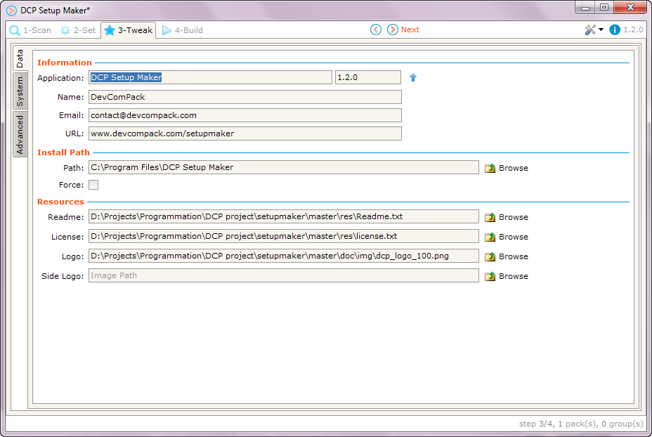

Finally, you add some information for your package like the application name and version number.
Additionally, you can add some resources like a Readme file, License, Images, and set the desired target path for your packs and shortcuts, and even more...

When finished, press  Next..
Next..